地政学
ブリッジタウンは東カリブの海路、英連邦、米州外交を結ぶ小島国の首都です。共和国化後も英国的制度を残し、気候資金、観光市場、移民、海洋安全保障を巡る交渉の入口になります。港の位置が国の声を支えます。
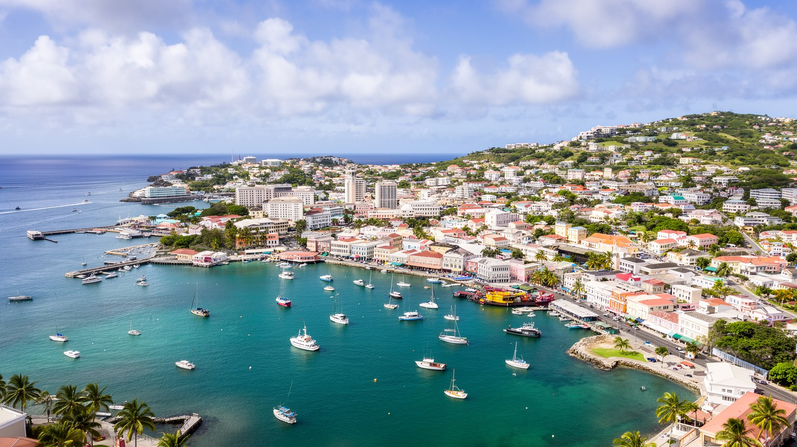
🇧🇧 バルバドス / 首都 / World City Atlas
小さな島国バルバドスの政治、港湾、観光、金融、植民地記憶が重なる首都です。砂糖と奴隷制の歴史、世界遺産の市街、クルーズ港、クリケット、気候リスクを読むと、カリブ海の都市性が見えてきます。
都市の骨格
ブリッジタウンは巨大都市ではありません。けれどもカリブ海東端の港、国会、金融機能、砂糖植民地の記憶、クルーズ観光、近郊住宅、浜辺が短い距離で結ばれ、島全体の政治経済を映す都市です。
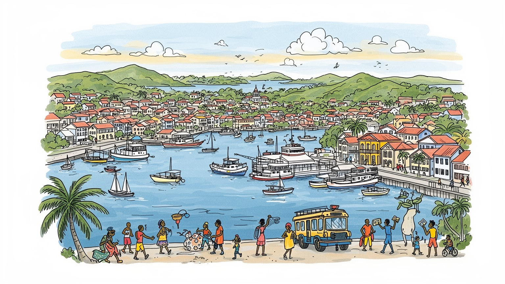
ブリッジタウンは東カリブの海路、英連邦、米州外交を結ぶ小島国の首都です。共和国化後も英国的制度を残し、気候資金、観光市場、移民、海洋安全保障を巡る交渉の入口になります。港の位置が国の声を支えます。
観光、港湾、行政、金融、保険、教育、飲食、小売が雇用を支えます。砂糖依存は弱まりましたが、ラムや食品加工に記憶は残ります。季節雇用、物価高、若者の職、海外送金が家計を左右します。港湾労働も重要です。
英国国教会、福音派教会、カリブ音楽、カリプソ、Crop Over、クリケット、ラジオが街の時間を作ります。奴隷制と解放の記憶も、祭りや学校教育に残ります。日曜礼拝と浜辺の余暇が近い距離で並びます。子どもの歌声も響きます。
旅行者は世界遺産、カーライル湾、港、市場、ガリソン地区を巡ります。住民はバス、学校、行政手続き、買い物、教会、浜辺、ハリケーン期の備えを使い分けます。観光都市の奥に、島国の日常と海辺の夜があります。
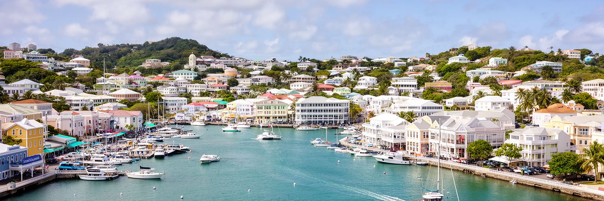
ブリッジタウンを読む入口は港です。カーライル湾に面した町は、帆船時代から大西洋貿易の寄港地として発展し、現在もコンテナ、燃料、食品、建材、クルーズ客を受け入れる島国の玄関です。バルバドスは国土が小さく、製造や食料を外部に多く頼るため、港の効率は物価、商店の在庫、建設、観光の品質に直結します。港に近い中心部には国会議事堂、行政、銀行、保険、法律事務所、バスターミナル、市場が集まり、海から入るモノと人が政治経済の中枢へすぐ届きます。一方で、港湾拡張やクルーズ観光は交通、廃棄物、沿岸景観、旧市街の歩行環境にも影響します。クルーズ客が短時間で市内を歩く日は、土産店やタクシーには機会が生まれますが、地元の買い物客や通勤者には混雑として表れます。港湾首都としてのブリッジタウンは、観光写真の海だけではありません。輸入に依存する島の脆さ、海運費の上昇、気候災害後の復旧物資、地域貿易の結節点としての役割が重なります。カリブ海の都市では、港は景色ではなく生命線です。ブリッジタウンの港を眺めることは、島全体が世界経済とつながる仕組みを見ることでもあります。港の働きが滑らかなほど、首都の生活は安定します。さらに港は、漁業者、税関、倉庫業、観光案内、警備を結ぶ職場でもあり、海辺の景観を働く都市へ変えています。
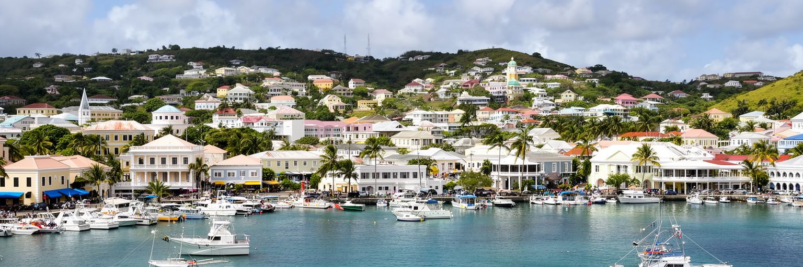
ブリッジタウンの美しい石造建築と港の背後には、砂糖植民地の重い歴史があります。十七世紀以降、バルバドスはサトウキビ農園と大西洋奴隷貿易で富を生み、港は砂糖、糖蜜、ラム、人の移動を管理する場所になりました。現在の中心街に残る倉庫、教会、議会、商館の景観は、カリブの近代経済が暴力的な労働支配の上に築かれたことを示します。奴隷制廃止後も、土地所有、教育、肌の色による階層、都市と農村の関係には長い影響が残りました。ブリッジタウンを単なる英国風の植民地都市として眺めると、この歴史は見えにくくなります。重要なのは、建物の保存と同時に、誰がそれを建て、誰が港で働き、誰の富が街を作ったのかを語ることです。バルバドスでは共和国化や国民的英雄の顕彰を通じて、植民地支配を受けた側の視点を公共空間へ戻す動きが続いています。ラムや砂糖は今も文化と観光の資源ですが、甘い商品イメージだけに閉じ込めるべきではありません。市場、博物館、学校、祭り、家族の記憶を通じて、解放後の社会がどのように尊厳を回復してきたかが見えてきます。ブリッジタウンの街路は、海に開いた明るさと、砂糖経済の暗い蓄積を同時に抱える場所です。その二重性を読むことが都市理解の核心です。記念碑や通り名を見直す議論も、過去を消すためではなく、街の語り手を増やすためにあります。
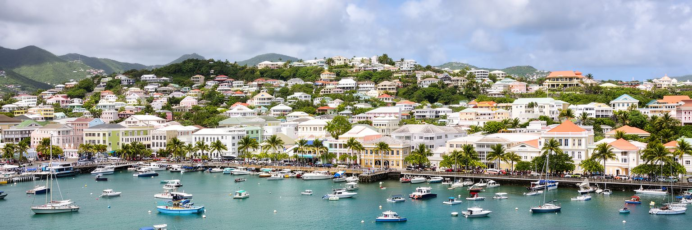
ブリッジタウンの観光は、旧市街だけでなくカーライル湾の海と強く結びつきます。白い砂浜、透明な水、難破船のシュノーケリング、海辺のバー、クルーズ寄港、歴史散策が短い距離で組み合わさり、訪問者は半日でも都市とビーチの両方を体験できます。バルバドス経済にとって観光は外貨、雇用、税収の柱であり、ホテル、飲食、タクシー、ガイド、警備、清掃、イベント、食材供給まで広い職種を支えます。一方で、観光依存は国際航空運賃、為替、感染症、景気後退、気候災害に弱いです。浜辺の美しさは自然に見えますが、侵食、海水温上昇、サンゴの劣化、排水、漂着ごみ、沿岸開発の影響を受けます。観光客向けの海辺空間が増えるほど、住民が気軽に海へ行ける権利も大切になります。ブリッジタウンでは、港から歩いて浜辺へ出られる近さが魅力ですが、同時に交通、安全、公共トイレ、日陰、料金の透明性を整えなければ、観光の印象は弱まります。夕方の海風、鉄板の匂い、音楽が漏れるバーは、夜の消費と住民の余暇を結びます。観光都市の成功は、豪華なホテルだけでなく、働く人の賃金、地元店への波及、住民が誇れる公共海岸にかかっています。浜辺は商品である前に、島の暮らしと記憶の場所です。海を味わう経験が住民と訪問者の双方に開かれている時、ブリッジタウンの観光はより持続的になります。短い滞在を街歩きや文化施設へつなげる案内も、収入を地元へ広げる鍵になります。
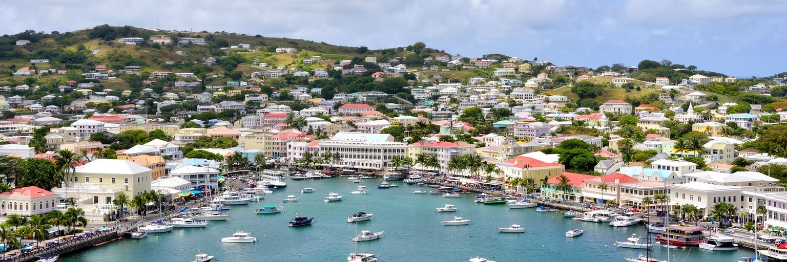
ブリッジタウンは、バルバドスの政治制度を最も近くで見せる場所です。国会議事堂、官庁、裁判所、中央銀行、各国大使館が中心部に集まり、英連邦の議会制を受け継ぎながら、二〇二一年に共和国となった国家の現在を形づくっています。共和国化は国名や旗を変えるだけの出来事ではなく、植民地支配の記憶、国家元首の象徴、教育、文化、外交上の自立を問い直す契機でした。ブリッジタウンの政治は国内行政だけでなく、カリブ共同体、気候変動交渉、債務、災害復旧、海洋資源、航空路、観光市場ともつながります。バルバドスは人口の小さい国ですが、国際会議や気候資金の議論では、小島嶼国の脆弱性を強く発信してきました。首都の規模が小さいため、政治家、行政官、事業者、市民団体、ラジオ局、新聞、SNSの距離は近く、政策の評判も日常会話に入りやすいです。中心街で国会の時計塔を見上げると、英国植民地期から続く制度と、独立後の自己決定が同じ建物に重なっていることが分かります。ブリッジタウンは大国の首都のように軍事力を誇示する都市ではありません。海面上昇、観光依存、医療、教育、移民、地域連携を通じて、小国がどのように世界へ発言するかを示す都市です。政治の重みは、広大な官庁街ではなく、港と市場に近い街路の密度に表れます。市民の請願や選挙運動も身近で、政策は抽象より生活費の話として届きます。
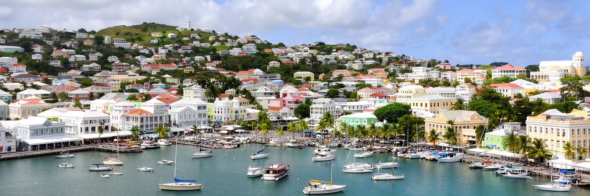
ブリッジタウンの文化を語る時、クリケットは欠かせません。ケンジントン・オーバルは西インド諸島クリケットの象徴的な舞台であり、試合の日には国籍、世代、階層を越えて人が集まります。バルバドスは多くの名選手を生み、クリケットはスポーツであると同時に、植民地支配を受けた社会が自信と技巧で宗主国の競技を自分たちのものに変えた文化でもあります。街のバー、家庭、学校、タクシーでは試合の話が会話をつなぎ、勝敗は島の気分を左右します。音楽や祭りも同じように都市を動かします。Crop Overは砂糖収穫の終わりに由来し、現在はカリプソ、ソカ、衣装、パレード、路上の食、観光を巻き込む大きな祝祭です。日曜の教会、学校の合唱、ラムショップの会話、海辺の音楽、ラジオの声、SNSに流れる衣装写真が、英語とバジャン・クレオールの間で街の響きを作ります。文化は観光向けの見せ物だけではありません。歴史的な痛みを笑いやリズムへ変え、共同体の誇りを更新する生活の技術です。一方で、若者の表現、女性の安全、祭りの商業化、公共空間の管理には調整が要ります。ブリッジタウンの文化は、競技場、教会、市場、浜辺、学校を行き来しながら生まれます。クリケットの歓声を聞くと、この小さな首都がカリブ全体の記憶と結びついていることが分かります。文化の強さは、観客席だけでなく日々の冗談や歌にも宿ります。
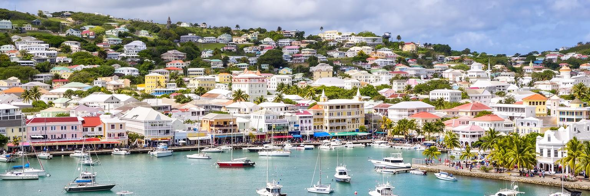
ブリッジタウンの生活は、港や世界遺産の景観だけでは捉えられません。住民は中心街、セントマイケル parish の住宅地、周辺 parish からバスや自家用車で通勤し、学校、病院、役所、市場、教会、商店を使い分けます。島の面積が小さいため、首都の機能は全国の日常に近く、行政手続きや大きな買い物、仕事の面接、銀行の用事がブリッジタウンへ集まります。一方で、中心部の商業空洞化、駐車、老朽建築、洪水、家賃、若者の雇用、治安への不安は住民の都市体験を左右します。観光客が海辺と旧市街を歩く時、その背後では販売員、清掃員、港湾労働者、ホテル従業員、公務員、教師、看護師が都市を支えています。バルバドスは教育水準が高く社会制度も整っていますが、輸入物価の上昇や住宅費は家計に響きます。朝の通学、放課後の迎え、高齢者の通院、市場の買い物、夜の小さな店の灯りは、首都を生活圏として見せます。親族の助け合い、教会のネットワーク、近所の挨拶、バス停での会話は、小さな島の安心感を作る一方、選択肢の少なさや噂の近さを息苦しく感じる人もいます。日常は、世界に開いた観光経済と顔の見える共同体の間で成り立っています。中心街を訪問者だけでなく住民が使いやすい場所として再生することが重要です。日陰、歩道、住宅、公共交通、小さな店の存在が、首都を本当の生活圏にします。
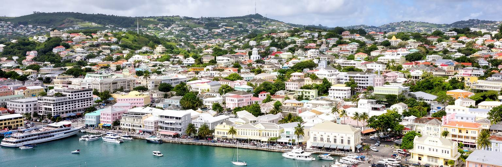
ブリッジタウンは熱帯海洋性の気候にあり、貿易風が暑さを和らげる一方、雨季、強い日差し、高潮、沿岸侵食、熱帯低気圧への備えが都市管理を左右します。バルバドスはカリブ海の中ではハリケーンの直撃が比較的少ない位置にありますが、近年の強い嵐や豪雨は、島国の脆弱性を改めて示しています。港、道路、ホテル、発電、通信、病院、学校が沿岸や低地に近いほど、災害時の影響は大きくなります。ブリッジタウンでは、雨水排水、古い建物の補強、避難計画、海岸の保全、停電対策、観光客への情報提供が重要です。気候変動は将来の抽象的な問題ではなく、保険料、住宅修繕、ビーチの幅、クルーズ寄港、農産物価格、健康に表れます。暑さが強まれば、屋外で働く人、バスを待つ人、高齢者、子どもに負担がかかります。日陰のある歩道、街路樹、涼める公共施設、水の確保は、観光地の快適さだけでなく住民の安全にも関わります。小島嶼国は排出量が小さいのに被害を受けやすいため、バルバドスの気候外交は都市の日常と直結しています。ブリッジタウンの海辺を守ることは、美しい景観を保つだけではありません。港、仕事、住宅、記憶、国家財政を守ることです。気候に強い首都づくりは、カリブ全体の課題を先取りしています。日々の備蓄、保険、避難訓練まで含めて、気候適応は暮らしの知恵になります。
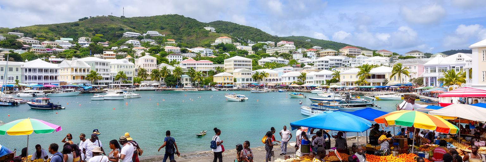
ブリッジタウンの食は、島の歴史と日常を分かりやすく伝えます。市場には魚、飛び魚、果物、根菜、スパイス、調味料が並び、周辺の食堂ではクークー、フィッシュケーキ、マカロニパイ、煮込み、グリル、ラムが人を集めます。食材の多くは地元産と輸入品が混ざり、島の小ささ、海の恵み、国際物流への依存が一皿に表れます。砂糖とラムの歴史は観光商品として明るく語られますが、その背後には農園労働と植民地経済の記憶があります。市場やラムショップは、単なる消費の場ではなく、政治、スポーツ、家族、仕事の話が交わされる社交空間です。バルバドスの物価は輸入依存のため上がりやすく、食費は家計の大きな関心です。観光客向けのレストランが増える一方、住民が手頃に食べられる店や市場が残るかどうかは、中心街の公平さを測る指標になります。魚の匂い、唐辛子の刺激、油のはぜる音、買い物袋を持つ高齢者や子どもの声が、路上経済の温度を伝えます。食文化を守るには、漁業、農家、加工業、港湾物流、衛生、若い料理人の機会をつなぐ必要があります。ブリッジタウンで食べることは、海、畑、港、植民地史、現在の家計を同時に味わうことです。路地の小さな店や市場の会話をたどると、観光パンフレットでは見えない島の生活力が分かります。食卓は、世界に開いた首都を地元の身体感覚へ戻す場所です。食材価格が上がる時ほど、家庭料理と市場の知恵は都市の回復力になります。
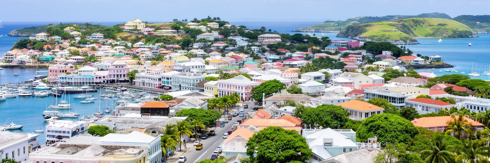
ヒストリック・ブリッジタウンとそのガリソンは、二〇一一年に世界遺産に登録されました。価値の中心は、単に古い建物が残ることではありません。英国植民地時代の港湾都市が、計画的な格子ではなく有機的な街路を持ち、軍事拠点、港、行政、商業、宗教が一体となって発展した点にあります。国会議事堂、シナゴーグ、教会、倉庫、橋、ガリソン地区、競馬場、軍事施設の痕跡を歩くと、ブリッジタウンがカリブ海の英国支配における重要な拠点だったことが見えます。しかし世界遺産の保存は簡単ではありません。中心街の商業衰退、建物の老朽化、空き店舗、車交通、洪水、資金不足、観光動線の偏りが、保存と再生を難しくします。遺産を守るとは、過去を固定することではなく、現在の住民と働く人が使える都市として価値を生かすことです。ガリソン地区は軍事史を語る場所であると同時に、スポーツ、教育、余暇、観光の場でもあります。旧市街の建物には植民地支配の威光だけでなく、奴隷制、解放、ユダヤ人共同体、商人、労働者の記憶が折り重なります。ブリッジタウンの世界遺産は、きれいな外観を眺めるだけでは理解できません。港と砦と市場を結ぶ道を歩き、誰の歴史が語られ、誰の歴史が見えにくいのかを考えることで、その価値が深まります。保存の成否は、建物の修理だけでなく、語りの更新にもかかっています。
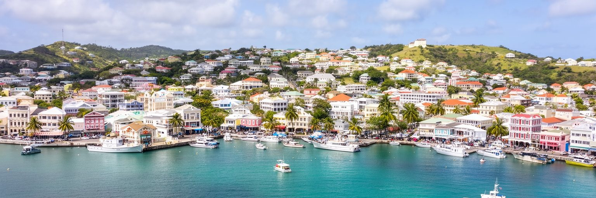
ブリッジタウンはバルバドスの交通結節点です。バスターミナルから島内各地へ路線が伸び、港は貨物とクルーズを受け入れ、空港道路は観光客とビジネス客を首都へ運びます。島が小さいため距離は短く見えますが、朝夕の渋滞、駐車、道路維持、公共交通の信頼性は、通勤、通学、買い物、観光の満足度に直結します。バスやミニバスは住民の重要な足であり、車を持たない人、学生、高齢者、低所得層にとって生活の自由を支えます。一方で、観光客の移動はタクシーやレンタカーに偏りやすく、中心街への回遊が弱いと港や浜辺の消費が限られます。島外との接続も重要です。航空路が減れば観光収入は落ち、海運が乱れれば物価と在庫に影響します。地域内の移動が不便なカリブでは、近隣島との航空便やフェリー、デジタル接続も経済と文化を左右します。ブリッジタウンの役割は、島内の生活交通と国際的な入口を重ねて管理することです。歩きやすい中心街、分かりやすいバス情報、港から旧市街への安全な動線、空港との円滑な接続は、住民と訪問者の双方に利益をもたらします。接続性は道路や船だけの問題ではありません。教育、医療、仕事、家族、祭りへ人が届くかを決める社会インフラです。小島の首都では、移動の質が国全体の機会を左右します。待ち時間の短縮や歩道の改善も、島の公平性を支える投資です。
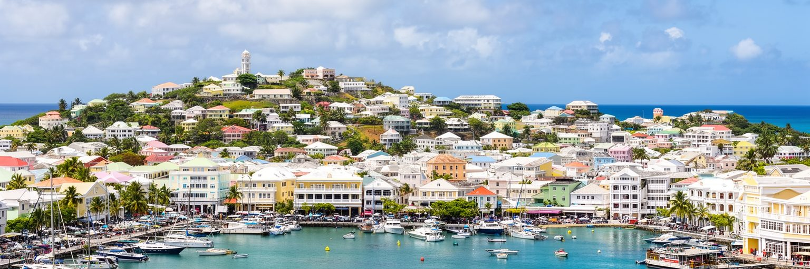
ブリッジタウンを読む面白さは、小さな都市空間に島国の全体が圧縮されていることです。港には輸入とクルーズ、国会には共和国の政治、旧市街には砂糖植民地と奴隷制の記憶、ガリソンには軍事史、浜辺には観光、競技場にはクリケット、バスターミナルには住民の日常が集まります。どれか一つだけを見れば、明るいビーチリゾート、英国風の歴史都市、静かな小国の首都に見えるかもしれません。しかし実際のブリッジタウンは、観光収入に頼る経済、輸入物価に左右される家計、海面上昇にさらされる沿岸、植民地支配を問い直す政治、カリブ地域へ発言する外交が重なった都市です。都市規模は大きくありませんが、扱うテーマは大きいです。海は美しい景観であると同時に、貿易、移民、奴隷制、災害、余暇の通路でもあります。中心街を歩くと、古い建物の保存と商業再生、住民の利便性と観光の演出、国家の誇りと植民地記憶の間で、都市が調整を続けていることが分かります。ブリッジタウンは、カリブ海の首都が持つ軽やかさと脆さを同時に示します。港から市場へ、国会から浜辺へ、ガリソンから住宅地へ歩くと、島国の都市性はリゾートの外側に広がっていると分かります。その広がりを丁寧に読むことが、この首都を理解する近道です。小ささを理由に見過ごさない時、カリブ都市の大きな論点が見えます。